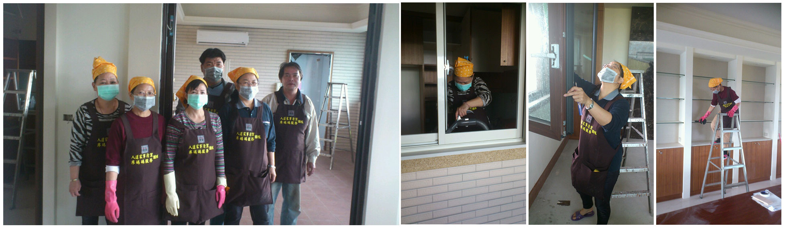

到府打掃服務
您可以選擇每週一次居家清潔或二週一次居家清潔的居家清潔方式來進行並維護您的居家清潔，安心的居家清潔環境使您輕鬆享受乾淨、無塵的居家清潔生活！
我們生活品質常因為居家清潔而受到影響，建議您應隨時留意是否該進行重點式的單次居家清潔，來維護您和家人的健康及居家清潔維護！
人道家事清潔的宗旨除了提供二度就業婦女一個工作的機會，也希望有共同志趣的青年朋友一同加入居家清潔的行列，我們堅持以平凡的價格提供給客戶五星級的服務品質，讓客戶不必再為了家事煩心，享有安心、放心、全方位的居家清潔服務。
人道的宗旨------以工代賑，協助弱勢
以工代賑，是古時農村脫貧的一種優良的鄉村文化，也是民生互助、互惠，良好的傳統美德。
在這不景氣的過度時期 , 對低收入的弱勢群 , 他們正面臨生存的極大壓力 , 在尚不具備抗壓性、自我發展的能力、與適應力時，他們的生命是相當脆弱的。
如何協助他們解決生活貧困的問題，使他們也能在困境中，維持家庭的基本溫飽，如此的社會才會和諧、安定。
我們的團隊
